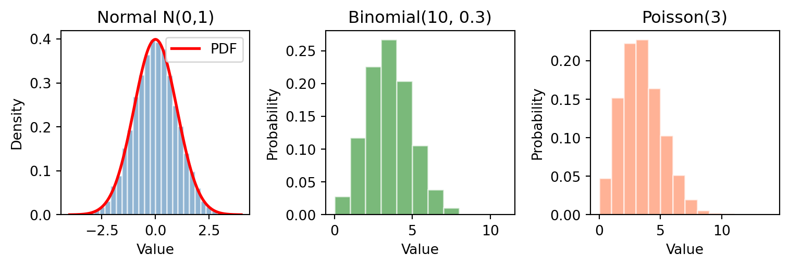

import numpy as np
import matplotlib.pyplot as plt
from scipy import stats
np.random.seed(42)
n = 10000
# Generate samples
normal = np.random.normal(0, 1, n)
binomial = np.random.binomial(10, 0.3, n)
poisson = np.random.poisson(3, n)
# Create 1x3 subplot
fig, axes = plt.subplots(1, 3, figsize=(8, 2.8))
# Normal distribution
x = np.linspace(-4, 4, 1000)
axes[0].hist(normal, bins=30, density=True, alpha=0.6, color='steelblue', edgecolor='white')
axes[0].plot(x, stats.norm.pdf(x, 0, 1), 'r-', lw=2, label='PDF')
axes[0].set_title('Normal N(0,1)')
axes[0].set_xlabel('Value')
axes[0].set_ylabel('Density')
axes[0].legend()
# Binomial distribution
axes[1].hist(binomial, bins=range(12), density=True, alpha=0.6, color='forestgreen', edgecolor='white')
axes[1].set_title('Binomial(10, 0.3)')
axes[1].set_xlabel('Value')
axes[1].set_ylabel('Probability')
# Poisson distribution
axes[2].hist(poisson, bins=range(15), density=True, alpha=0.6, color='coral', edgecolor='white')
axes[2].set_title('Poisson(3)')
axes[2].set_xlabel('Value')
axes[2].set_ylabel('Probability')
plt.tight_layout()
plt.show()
print(f"Normal: mean={normal.mean():.3f}, std={normal.std():.3f}")
print(f"Binomial: mean={binomial.mean():.3f}, var={binomial.var():.3f}")
print(f"Poisson: mean={poisson.mean():.3f}, var={poisson.var():.3f}")
Normal: mean=-0.002, std=1.003
Binomial: mean=3.038, var=2.141
Poisson: mean=2.990, var=2.951